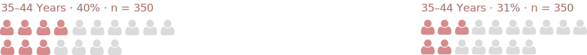
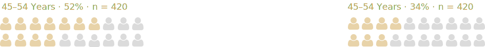
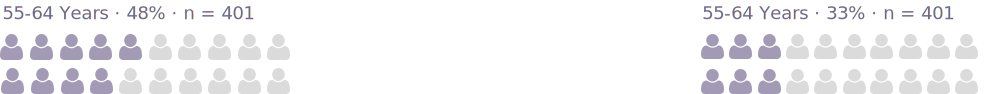
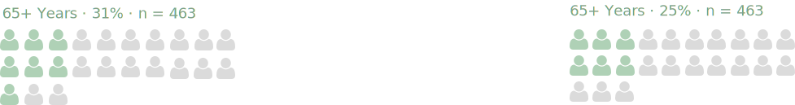
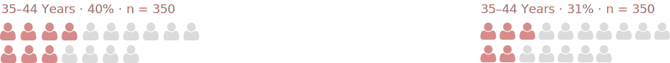
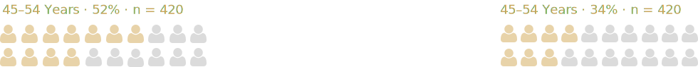
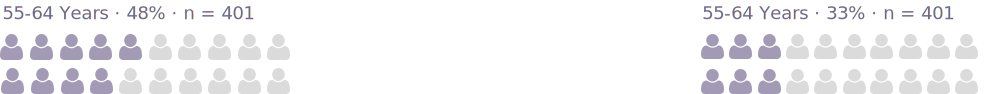
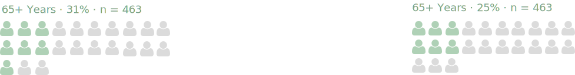

This project explores New Zealand’s love for cats and dogs through an interactive web-based visualisation.
We aim to reveal not just ownership trends, but also how companion animals shape people’s lifestyles, communities, and daily choices.
The visualisation moves from macro to micro, starting with national ownership rates and geographic differences, and drilling down to pet acquisition methods, ownership motivations, income patterns, and barriers faced by future pet owners.
Our primary dataset is the Companion Animals New Zealand Pet Data Report 2024, based on a national survey conducted by Companion Animals NZ.

This graph presents the regional distribution of cat and dog ownership in New Zealand, based on household survey data.
Households in the Rest of the North Island are the most likely to own a dog (38%).
Auckland has the lowest dog ownership rate (24%), which is significantly lower than other regions. Cat ownership follows a similar pattern.
Rest of the North Island leads with 46% of households owning a cat. Auckland again shows the lowest ownership rate at 35%.
Households in the Rest of the South Island report equal ownership rates for cats and dogs, both at 36%.
The sample sizes for each region vary and may influence the statistical reliability of the pet ownership rates presented. In particular:
Regions with larger base sizes—such as Rest of the North Island (n=666) and Auckland (n=627)—provide stronger confidence in the reported trends.
However, regions with smaller sample sizes (such as Rest of South Island and Canterbury) may have wider margins of error, and their reported percentages should be interpreted with caution.
*Rest of North Island excludes Auckland and Wellington
**Rest of South Island excludes Canterbury


Cats remain the most popular companion animal (40% of households) and over the past 4 years.
we do not see a significant change in the cat population. It is estimated that there are approximately 1.26 million companion cats.
The number of households who share their household with a dog has declined from 34% in 2020.
to 31% in 2024. There are an estimated 830,000 companion dogs in New Zealand.


Base size(individual pets): 1,289 cats and 848 dogs
The ways in which New Zealanders acquire cats and dogs differ notably. Cats are most commonly obtained through animal rescue organisations, particularly the SPCA (22%). 16% of cats were found or adopted as strays, compared to just 1% of dogs, both suggesting cats are more commonly acquired informally or opportunistically.
While dogs are most frequently acquired from breeders (34%) or via private advertisements (21%), indicating more formal and commercial acquisition patterns. Informal networks (e.g. friends, family, neighbours) also play a key role in both cat and dog acquisition.

 






